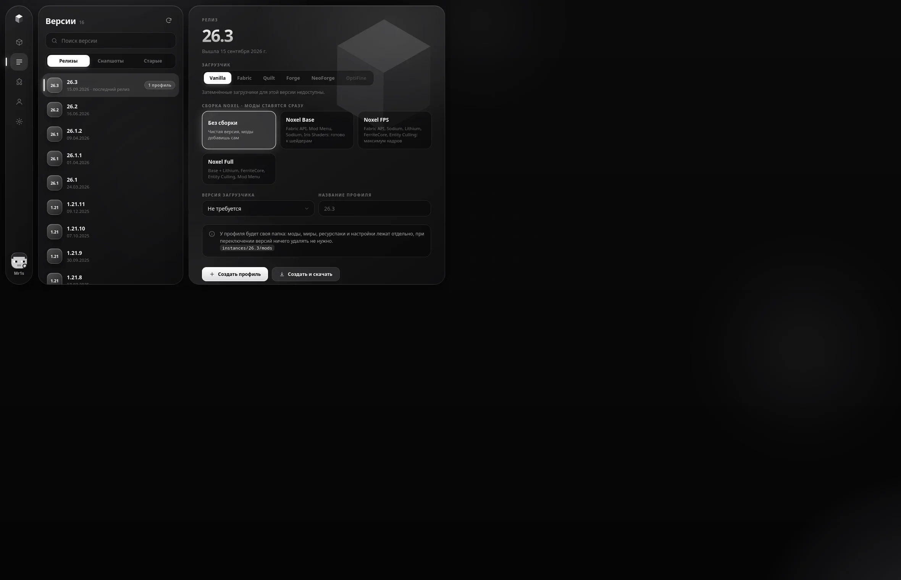
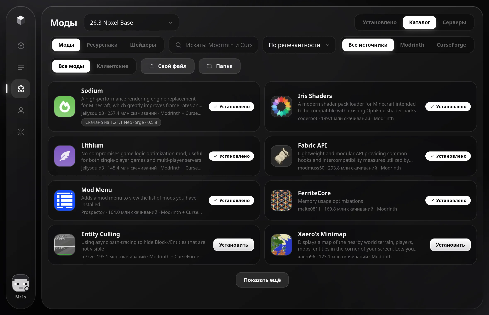
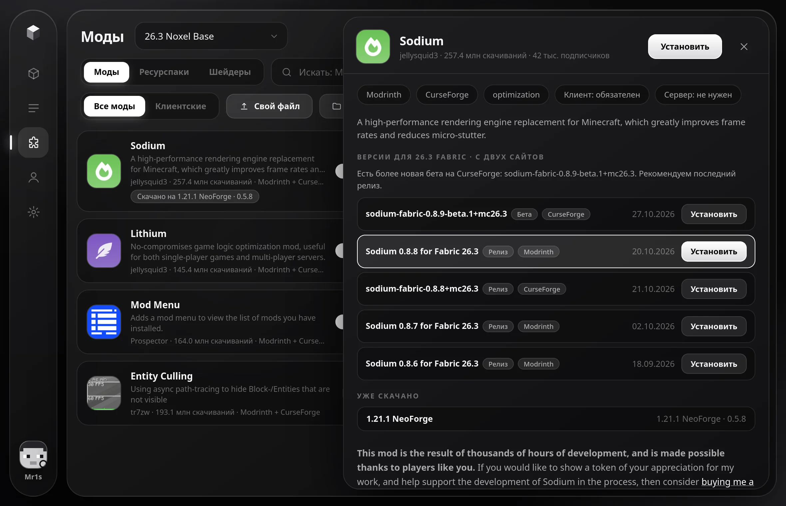
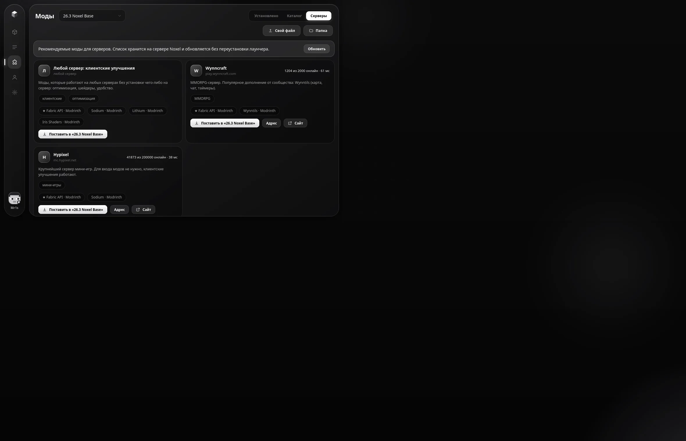
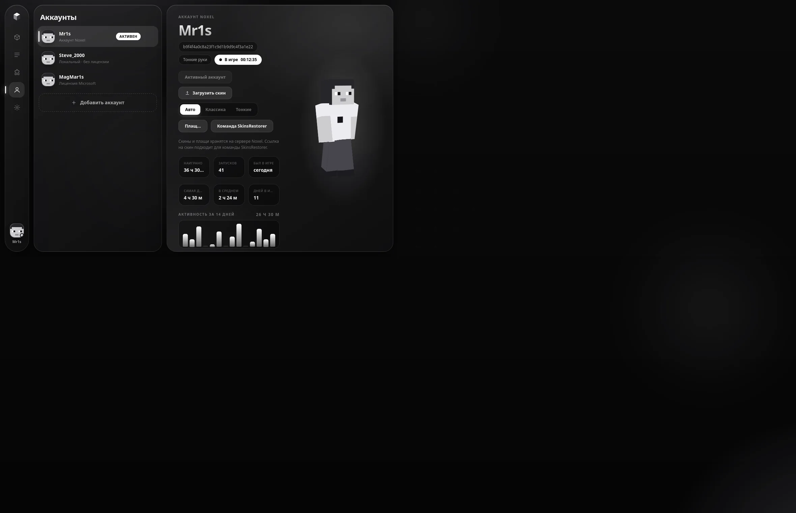
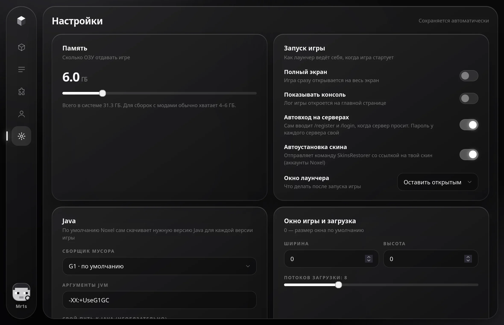

Документация
Здесь собрано всё, что нужно, чтобы начать пользоваться Noxel, и всё, что нужно, чтобы собрать его самому и поднять свой сервер.
Что такое Noxel
Noxel — бесплатный лаунчер Minecraft: Java Edition. Главная идея: у каждого профиля своя папка с модами, ресурспаками, шейдерами, мирами и настройками. Профиль — это сочетание версии игры и загрузчика, например «1.21.1 NeoForge» или «26.3 Fabric». Переключаясь между профилями, ты ничего не удаляешь и не переносишь.
Лаунчер сам скачивает игру, нужную версию Java, библиотеки и загрузчики, умеет искать и ставить моды из двух каталогов, управляет аккаунтами и скинами и обновляется без переустановки.
Установка
Linux (рекомендуется)
Скачай установщик на главной странице и запусти его. В окне выбери ярлыки, при желании отметь предзагрузку Java и последней версии игры и нажми «Установить». Установщик скачает лаунчер, проверит контрольную сумму и подпись автора и создаст ярлыки.
Нужны библиотеки WebKitGTK 4.1 (в Arch пакет webkit2gtk-4.1, в Ubuntu и Debian libwebkit2gtk-4.1-0). Лаунчер ставится в ~/.local/share/noxel/app, данные лежат в ~/.local/share/noxel.

Без установщика
Кнопка «Только лаунчер» скачивает один исполняемый файл. Сделай его исполняемым и запусти. Данные будут храниться в ~/.local/share/noxel (или рядом с файлом, если он лежит в папке «готовый продукт»; свой путь задаёт переменная NOXEL_HOME).
Windows
Код лаунчера и установщика уже содержит ветки для Windows: путь к Java, разделитель classpath, ярлыки, открытие папок. Сборка выполняется автоматически на GitHub (файл .github/workflows/release.yml в репозитории). Windows-версия ещё не проверялась на реальной машине, поэтому на сайте она помечена как «скоро».
Чтобы собрать самому на Windows 10 или 11: установи Rust с MSVC-инструментами и выполни в папке исходники\src-tauri команду cargo build --release --features custom-protocol. WebView2 уже есть в Windows 10 и 11.
Первый запуск
- Открой вкладку Версии, выбери версию игры и загрузчик.
- Нажми Создать и скачать: лаунчер скачает игру, библиотеки, ресурсы и Java.
- Вернись на Играть и нажми кнопку запуска.
Аккаунт по умолчанию — локальный «Player». Ник и тип аккаунта меняются на странице Аккаунты.
Профили и версии
Список версий берётся у Mojang: релизы, снапшоты и старые версии, с поиском. Для выбранной версии сразу видно, какие загрузчики доступны: Vanilla, Fabric, Quilt, Forge, NeoForge и OptiFine. Недоступные затемнены.

У профиля своя папка instances/<профиль>/ с mods, resourcepacks, shaderpacks, saves и конфигами. Кнопка копирования рядом с профилем делает полную копию вместе с модами и мирами.
Сборки Noxel
При создании профиля Fabric можно выбрать сборку, и моды поставятся сразу, вместе с зависимостями:
| Сборка | Что внутри |
|---|---|
| Noxel Base | Fabric API, Mod Menu, Sodium, Iris Shaders |
| Noxel FPS | Fabric API, Sodium, Lithium, FerriteCore, Entity Culling |
| Noxel Full | всё из Base и FPS |
Если для версии игры нет подходящего файла какого-то мода, остальные всё равно ставятся, а недоступные перечисляются отдельно.
OptiFine и Forge
zlib-ng (CachyOS, Fedora 40+): установщик Forge сверяет контрольные суммы файлов, а Java сжимает их через системный zlib. NeoForge и Fabric не затронуты. Лаунчер покажет понятное сообщение.Каталог и установка
На вкладке Моды → Каталог один поиск идёт сразу по Modrinth и CurseForge. Один и тот же мод показывается один раз с пометкой обоих источников. Можно переключиться на один из источников. Те же вкладки доступны для ресурспаков и шейдеров.

Если мод уже скачан в другом профиле, на карточке появится пометка вроде «Скачано на 1.21.1 NeoForge · 0.5.8». Обязательные зависимости ставятся автоматически.
Описание прямо в лаунчере
Нажми на карточку: откроется панель с описанием, скриншотами, лицензией, ссылками и списком профилей, где мод уже есть.

Версии мода
В карточке собраны версии с обоих сайтов для выбранной версии игры и загрузчика, с пометками «Релиз», «Бета», «Альфа» и источником. Иногда свежая версия выходит на одном сайте раньше: тогда лаунчер подсказывает, что есть более новая бета, но по умолчанию рекомендует последний релиз. Любую версию можно поставить отдельной кнопкой.
Клиентские моды
Фильтр «Клиентские» оставляет моды Modrinth, которым не нужна серверная часть: оптимизация, подсветка, миникарта, интерфейс. Они работают на любых серверах. Для CurseForge такого признака нет, поэтому в этом режиме показывается только Modrinth.
Свои файлы
Кнопка «Свой файл» или перетаскивание файлов в окно добавляют свои .jar (моды) и .zip (ресурспаки и шейдеры) в папку выбранного профиля. Любой мод можно выключить переключателем, не удаляя.
Обновление модов
Кнопка «Обновления» на вкладке «Установлено» сверяет моды Modrinth с последними версиями под вашу версию игры. Моды можно обновить по одному или все сразу: старый файл заменяется, нужные зависимости доставляются.
Моды для серверов
Вкладка Серверы показывает список популярных серверов и модов, которые для них рекомендуются. Кнопка «Поставить в профиль» устанавливает нужный набор. Список хранится на сервере Noxel, поэтому его можно менять без выпуска новой версии лаунчера.

Администратор вводит токен в Настройки → Администратор, и на вкладке появляются кнопки добавления, правки и удаления серверов.
Разбор вылетов
Если игра закрылась с ошибкой, лаунчер читает лог и ищет типичные причины: не хватает мода или нужна его другая версия (Fabric, Forge и NeoForge), конфликт миксинов, нехватка памяти, неподходящая Java, проблемы с графикой. Для недостающих модов есть кнопка «Найти мод»: она открывает каталог с готовым запросом. Тот же разбор можно запустить кнопкой «Разобрать ошибку» в консоли.
Типы аккаунтов
| Тип | Для чего |
|---|---|
| Локальный | Только ник. Для одиночной игры и серверов без проверки лицензии. |
| Noxel | Ник и пароль. Данные хранятся на сервере Noxel: скины, плащ, история, время игры и список профилей подтягиваются на любом устройстве. |
| Microsoft | Лицензионный аккаунт. Вход по коду на сайте Microsoft, пароль в лаунчер не вводится. |
Кнопка «Добавить аккаунт» стоит прямо под списком и открывает небольшое окно. Аккаунтов можно создать сколько угодно.
accounts.json в папке данных. Не публикуй этот файл.Скины и плащи
Нажми на аккаунт, и справа появится объёмная анимированная модель скина (её можно вращать мышью), статистика, серверы, миры и история скинов.

- Скины 64×64 с вторым слоем, тонкие руки (Alex) и старые 64×32 поддерживаются. Старые автоматически достраиваются до 64×64, как это делает сама игра.
- Тип рук определяется автоматически, его можно задать вручную.
- Загрузить скин можно кнопкой или перетаскиванием PNG в окно.
- История хранится, любой прежний скин возвращается одним кликом.
- У аккаунта Microsoft скин сохраняется прямо на серверах Mojang.
SkinsRestorer
Скин аккаунта Noxel получает постоянную ссылку вида https://mr1s.site/noxel/f/<хеш>.png. Кнопка «Команда SkinsRestorer» копирует готовую команду:
Вставь её в чат сервера со SkinsRestorer, и другие игроки увидят твой скин. На сервере ты видишь тот скин, который выдал плагин, лаунчер ничего не подменяет.
/register, /login, /skin) и показ загруженного скина в локальном мире вне лаунчера пока не реализованы.Настройки

- Память для игры и сборщик мусора (G1, Aikar для сборок с модами, ZGC), произвольные аргументы JVM.
- Java: по умолчанию нужная версия скачивается автоматически, можно указать свою.
- Окно игры, полный экран, число потоков загрузки.
- Поведение лаунчера при запуске игры (оставить открытым или свернуть) и автопоказ консоли.
- Анимации отключаются одним переключателем; настройка системы «уменьшить движение» тоже учитывается.
Обновление лаунчера
Через несколько секунд после запуска лаунчер спрашивает у сервера Noxel, есть ли новая версия. Если есть, предложит обновиться. Файл скачивается, проверяются контрольная сумма SHA-256 и подпись Ed25519 автора (публичный ключ встроен в лаунчер), после чего файл заменяется. Если проверка не прошла, обновление не применяется. Проверить вручную можно в Настройки → Лаунчер; там же кнопка «Новости».
Данные и приватность
- Все данные лежат в одной папке: профили, моды, миры, Java, аккаунты. Её адрес показан в настройках.
- Телеметрии и рекламы нет. Лаунчер обращается к Mojang (версии, игра, Java), Modrinth и CurseForge (каталоги), серверу Noxel (аккаунты Noxel, скины, список серверов, обновления, прокси CurseForge).
- Ключ API CurseForge хранится только на сервере Noxel и в лаунчер не попадает.
- Для OptiFine используется зеркало BMCLAPI, для скачивания Forge и NeoForge — официальные репозитории.
Если что-то не так
| Симптом | Что делать |
|---|---|
| Forge не ставится | На системах с zlib-ng это известная проблема старых версий. Возьми NeoForge или Fabric. |
| Версии 1.8.x падают на Wayland | Старая библиотека LWJGL 2 не умеет получать видеорежимы под XWayland. Это поведение самой игры. |
| CurseForge иногда пуст | API CurseForge временами отвечает ошибкой. Результаты Modrinth всё равно показываются, повтори запрос позже. |
| Не открывается окно | Установи WebKitGTK 4.1 (Linux) или WebView2 (Windows). |
| Игра закрылась | Нажми «Разобрать ошибку» в консоли на главной странице. |
Сборка из исходников
Нужны Rust и WebKitGTK 4.1 (на Linux). Интерфейс — один файл исходники/ui/index.html, сборка фронтенда не требуется. Структура репозитория:
| Папка | Содержимое |
|---|---|
| исходники/ | лаунчер: Rust-бэкенд (Tauri 2) и интерфейс |
| установщик/ | установщик с окном (Tauri 2) |
| сервер/ | API Noxel (Python), конфиги nginx и systemd, скрипт развёртывания |
| сайт/ | этот сайт |
| готовый продукт/ | собранные файлы (в git не попадают) |
Проверки на живых серверах запускаются командой cargo test --release --features custom-protocol -- --ignored.
API сервера Noxel
Все адреса начинаются с https://mr1s.site/noxel/v1, ответы в JSON. Приватные запросы требуют заголовок Authorization: Bearer <токен>.
| Запрос | Назначение |
|---|---|
| POST /register, /login | создать аккаунт или войти (ник и пароль), в ответе токен |
| GET /me, POST /logout | данные аккаунта, выход |
| GET/POST /skin | список и загрузка скина (PNG в теле, ?model=slim) |
| POST /skin/select, DELETE /skin/{id} | вернуть скин из истории, удалить |
| GET/POST /cape, /cape/select | плащ |
| GET/PUT /data | облачная статистика и сводка профилей |
| GET /profile/{ник} | публичная карточка игрока |
| GET /servers | рекомендуемые моды для серверов |
| PUT /servers | изменить список (токен администратора) |
| GET /launcher | манифест обновлений лаунчера |
| GET /cf/… | прокси к CurseForge (только чтение) |
Файлы скинов раздаются по /noxel/f/<sha256>.png, сборки — по /noxel/dl/.
Свой сервер
Сервер Noxel — один файл на Python (только стандартная библиотека) за nginx. На чистом Debian или Ubuntu от root:
Скрипт ставит nginx и certbot, создаёт отдельного пользователя без доступа к системе, службу systemd с изоляцией и сертификат HTTPS. Токен администратора создаётся в /etc/noxel/admin.token. Чтобы работал CurseForge, положи свой ключ в /etc/noxel/cf.key. Адрес сервера задаётся в исходниках лаунчера (skins.rs, константа API).
Выпуск релизов
Релиз подписывается закрытым ключом Ed25519, который хранится только у автора (папка .keys, в git не попадает). Публичный ключ встроен в лаунчер и установщик.